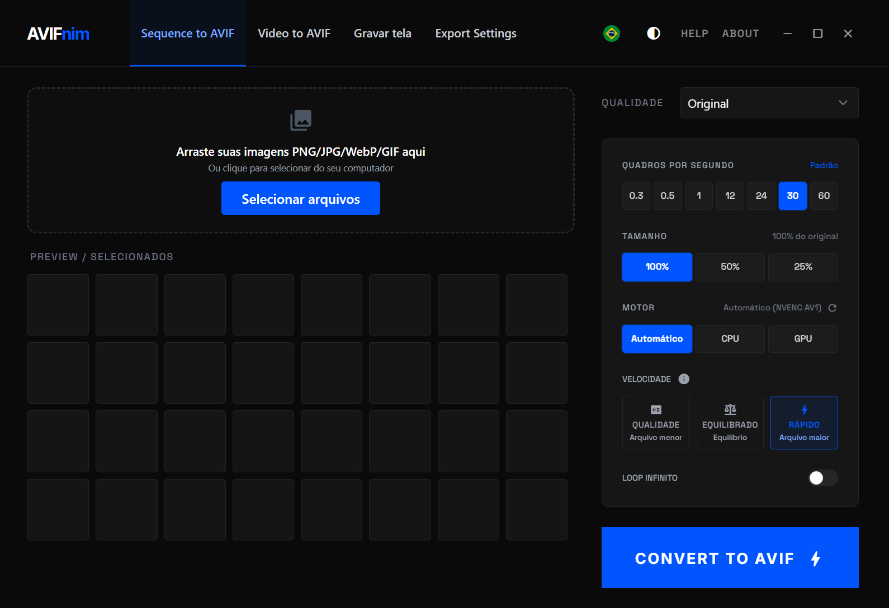

Sequência ou vídeo
PNG, JPG, WebP e GIF numerados — ou MP4, MKV, MOV, WEBM e AVI com corte de trecho e recorte antes de converter.
avifnimLicença individual · Windows e Linux · pagamento único

Um motor só, três formas de usar: desktop, terminal e agentes de IA.
PNG, JPG, WebP e GIF numerados — ou MP4, MKV, MOV, WEBM e AVI com corte de trecho e recorte antes de converter.
AV1 por hardware em NVENC (NVIDIA), AMF (AMD) e QuickSync (Intel), com fallback automático para CPU (libaom) quando a GPU não suporta — sem configuração.
Sequências com alpha viram AVIF com canal de transparência via avifenc, sem
fundo branco por acidente.
FPS de 0,3 a 60, escala 100/50/25%, presets de qualidade e velocidade, loop infinito e saída AVIF, WebP ou GIF.
O instalador coloca avifnim no PATH e sobe um servidor MCP em stdio para
Claude, OpenCode, Cursor e outros agentes.
Conversão na sua máquina, sem upload. Você escolhe onde salvar — e o app nunca sobrescreve um arquivo existente por acidente.
Três fluxos que ficam leves, rápidos e sem upload.
Corte o vídeo, ajuste o FPS e exporte um loop leve — com transparência de verdade e sem o peso do GIF.
Grave a tela direto no app, corte o que não interessa e exporte em AVIF. Tudo local, sem upload e sem render farm.
Renderize o loop em PNGs e converta a sequência em AVIF animado — pelo app, pelo CLI ou pelo seu agente via MCP.
Arraste, ajuste, exporte. Sem conta, sem espera de upload.
Selecione a sequência numerada ou um vídeo. O app detecta os frames automaticamente e monta a fila.
Defina FPS, qualidade, tamanho, recorte e loop. Para vídeo, corte o trecho e o enquadramento antes de converter.
Um clique gera o AVIF animado — com transparência quando o material tiver alpha — e salva onde você escolher.
Sequências, vídeos e gravações de tela no mesmo fluxo — com corte, recorte e três formatos de saída.

PNG, JPG, WebP ou GIF numerados entram como frames. O app ordena, mostra a prévia e preserva a transparência.

MP4, MOV, MKV, WEBM e AVI. Importe o arquivo, escolha o trecho e converta sem abrir outro programa.

Grave a tela com a câmera seguindo o cursor — pensada para tutoriais e documentação de processos.

Trim no trecho e crop no enquadramento, com prévia do resultado antes de exportar.

Exporte o mesmo material nos três formatos: AVIF para o site, WebP para compatibilidade e GIF quando for inevitável.
O AVIFnim usa o encoder AV1 por hardware quando disponível. Se a GPU não suportar AV1, ele cai para a CPU automaticamente — sem configuração.
Encode AV1 por hardware nas GPUs NVIDIA compatíveis (RTX 40 em diante).
Encoder AV1 por hardware nas Radeon com AMF compatível (RX 7000 em diante).
Aceleração AV1 por hardware em Intel Arc e iGPUs com QuickSync compatível.
Fallback automático quando não há GPU AV1. Usa todos os núcleos e funciona em qualquer máquina — mais lento que a GPU, mas sem configuração.
AV1 é livre de royalties (AOMedia). O motor usa FFmpeg (GPL), libavif (BSD-2-Clause) e Electron (MIT). Licenças de terceiros.
GIF tem 256 cores, transparência limitada e arquivos grandes. AVIF animado usa AV1, aceita milhões de cores, transparência real e costuma gerar arquivos bem menores na mesma qualidade.
Navegadores modernos como Chrome, Edge, Firefox e Safari recentes já dão suporte a AVIF.
Comprar e experimentar → Ler a história do GIF →| Critério | GIF | AVIF animado |
|---|---|---|
| Cores | 256 | Milhões |
| Transparência | 1 bit (sem suavização) | Canal alpha |
| Tamanho | Grande | Menor na mesma qualidade |
| Qualidade | Serrilhado e banding | Suave, com gradientes |
| Suporte | Universal | Navegadores modernos |
Além do app, o AVIFnim instala um CLI e um servidor MCP no PATH. O agente (Claude, OpenCode, Cursor…) renderiza os PNGs, chama a conversão e recebe o caminho final para inserir no site — sem você abrir o app.
avif_from_sequenceavif_from_videoavif_inspect_sequenceavif_suggest_outputavif_capabilitiesavifnim init --write \
--input "C:\projeto\render" \
--output "C:\projeto\public\img\hero.avif" \
--type sequence{
"mcpServers": {
"avifnim": {
"command": "avifnim",
"args": ["mcp"]
}
}
}avifnim convert ".\render" \
--out ".\site\img\hero.avif" \
--fps 24 --quality levisio --jsonLicença individual do AVIFnim: desktop, CLI e servidor MCP em um único instalador.
O mesmo instalador traz o app desktop, o comando avifnim e o servidor MCP.
avifnim + servidor MCPFunciona nos navegadores modernos (Chrome, Edge, Firefox e Safari recentes). Não é universal como o GIF: se o seu público usa navegadores antigos, teste antes ou ofereça uma alternativa.
Não. Com GPU compatível o encode usa NVENC, AMF ou QuickSync; sem GPU o app cai automaticamente para CPU (libaom-av1).
Não. Tudo roda na sua máquina, inclusive no CLI e no MCP. Nenhum arquivo sai do computador.
Instale o componente CLI + MCP, rode avifnim init no projeto e
cole o bloco gerado no AGENTS.md, CLAUDE.md ou
rules.md. O agente passa a chamar as tools de conversão.
Sim: MP4, MKV, MOV, WEBM e AVI, com corte de trecho, recorte de enquadramento, FPS e escala antes de virar AVIF (ou WebP/GIF animado).
Não por padrão. Se a saída já existir, ele cria nome-2.avif,
nome-3.avif…
Compre o AVIFnim e converta seu próximo loop em AVIF animado.
Ao comprar ou baixar, você concorda com o EULA.